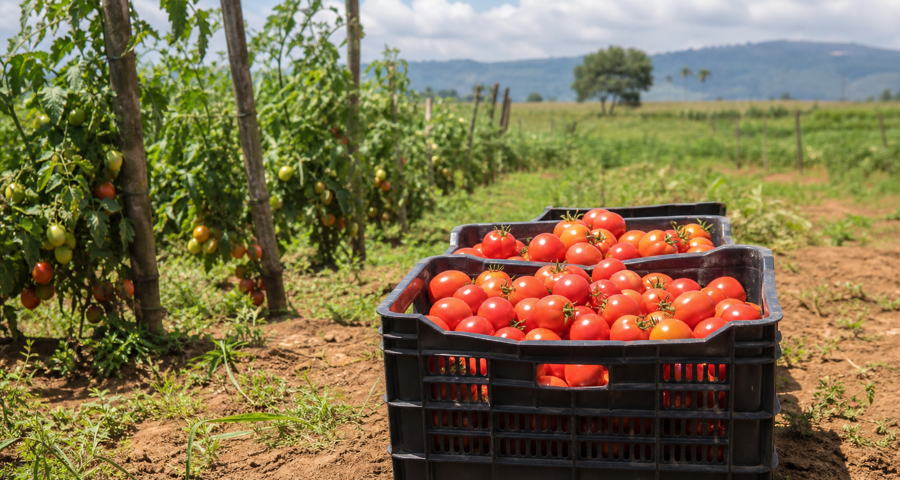
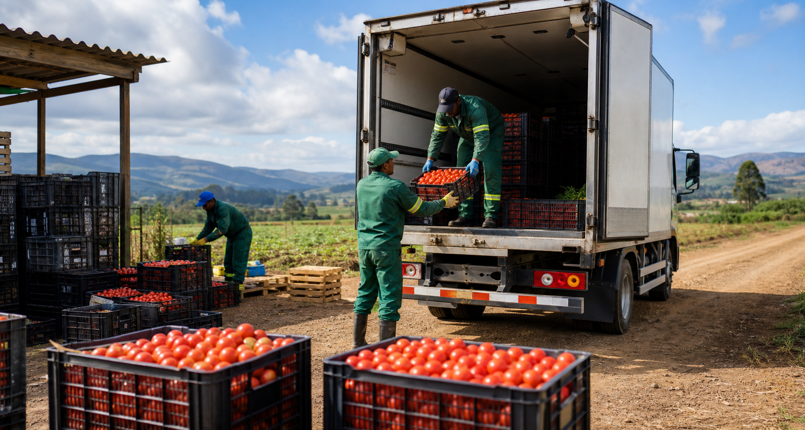
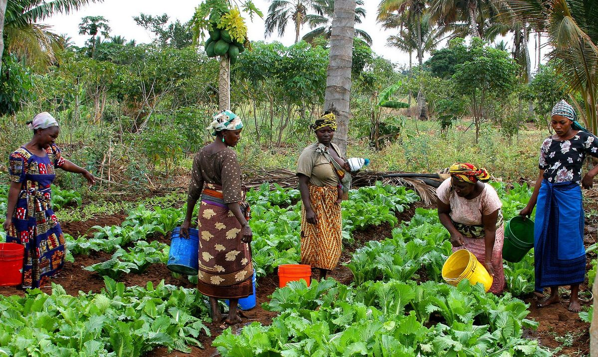
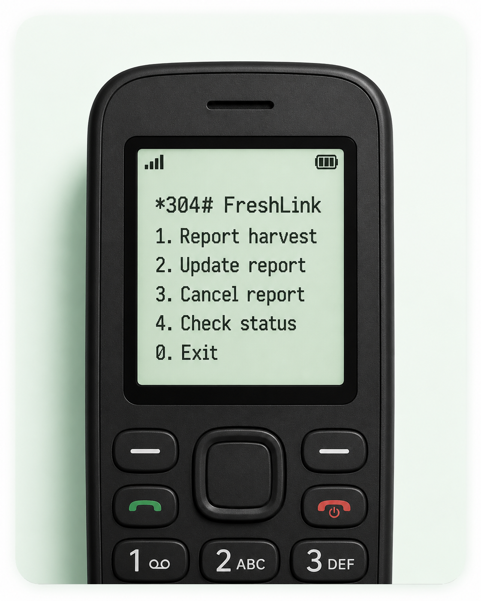
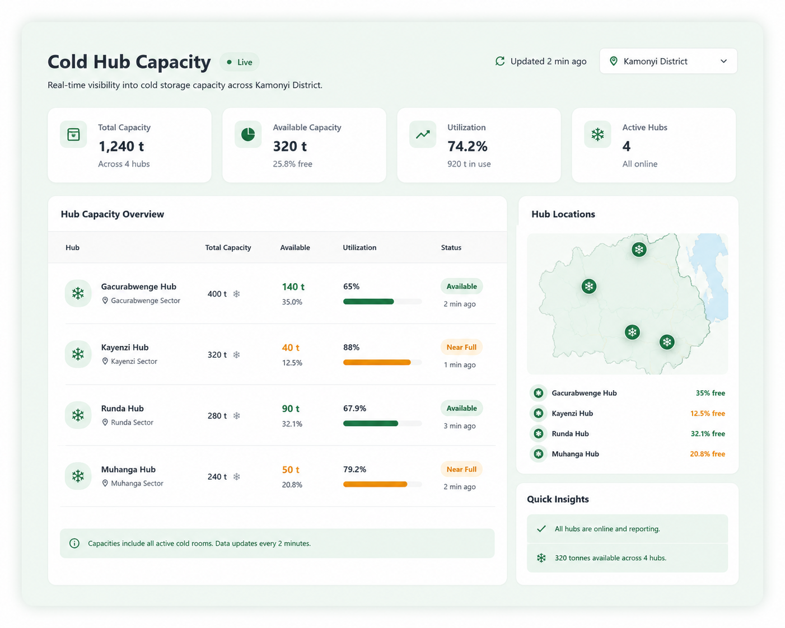
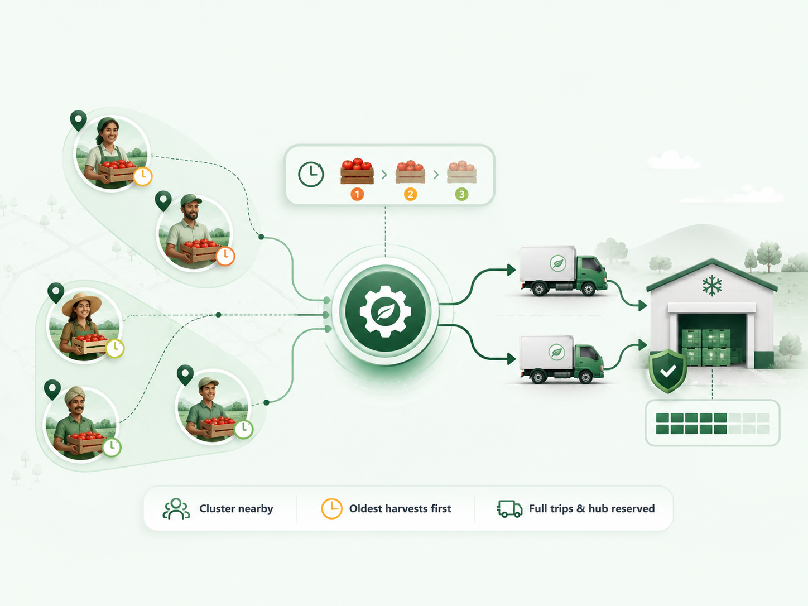
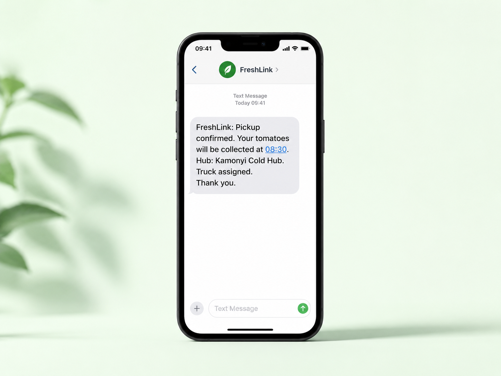
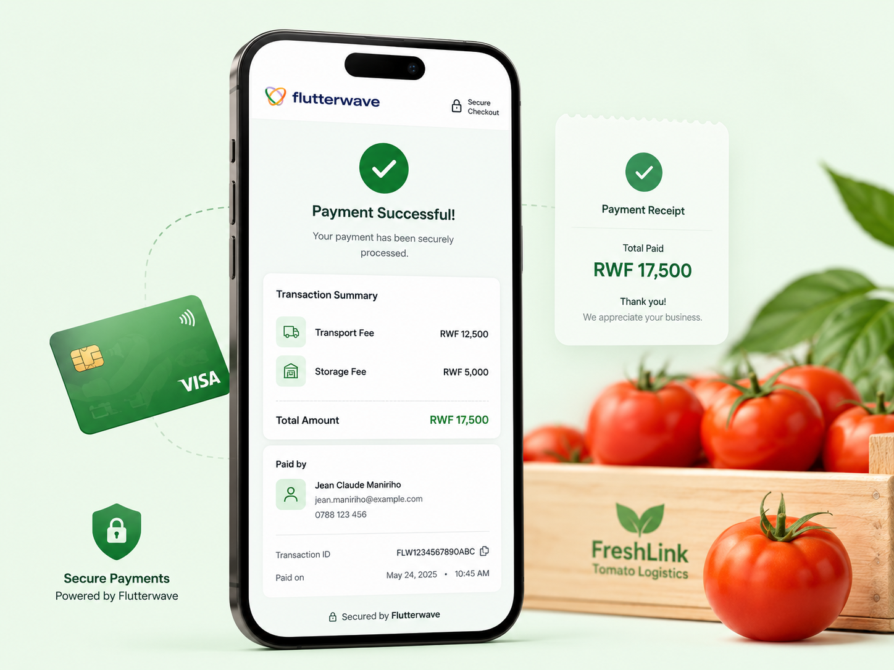
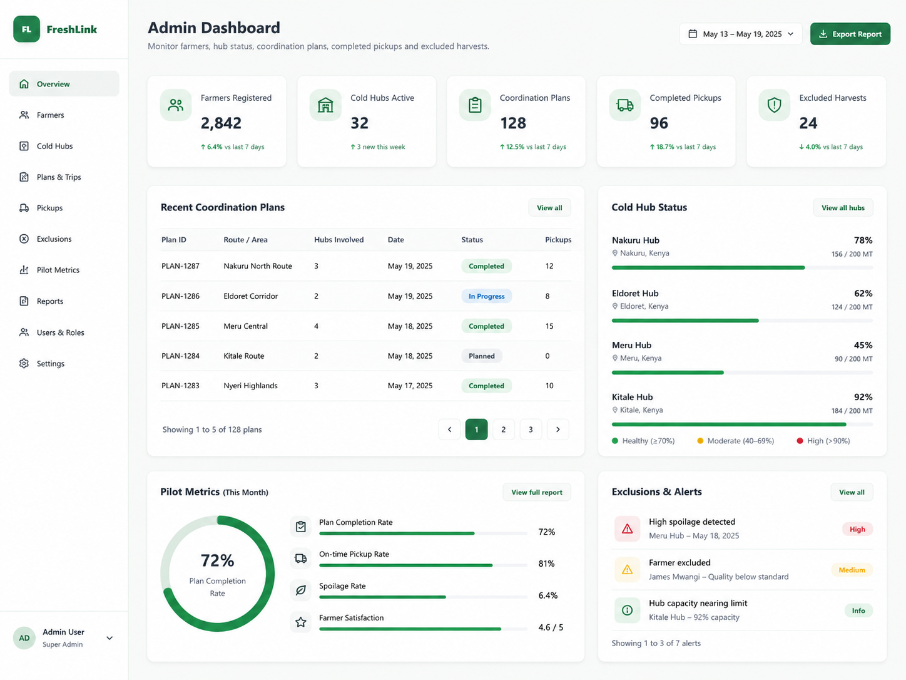

Harvest before a plan
Tomatoes are picked before transport or storage is confirmed, so they sit and over-ripen.



Tomato Post-Harvest Coordination · Kamonyi District, Rwanda.
The Problem
Tomatoes spoil fast, but harvest, transport and storage are arranged separately — through scattered calls and guesswork.
Tomatoes are picked before transport or storage is confirmed, so they sit and over-ripen.
Separate calls mean half-empty trips, missed pickup windows, and damage from overloading.
Cold-room space fills up, and no one knows in time whether a hub can take the load.
How it works
FreshLink runs on a schedule — like a bus timetable. Farmers report into it; the engine coordinates what's waiting.
A farmer dials a short code and reports the tomato quantity, harvest date and location — in English or Kinyarwanda. No smartphone, no app, no data bundle needed.
Cold-hub operators post the storage they actually have free; transporters post available trucks and capacity. The system plans against real numbers, not assumptions.
Every two hours the coordination engine reads pending harvests oldest-first, groups nearby farmers, and matches each group to a truck with room and a hub with space — or logs why it couldn't.
Farmers get an SMS confirming the pickup; operators see it on their dashboards. When a trip is created, the farmer's payment to the transporter and the hub is settled through Flutterwave.
Features
Built on the tech stack that runs the platform — scroll through each capability.

Farmers report, update, or cancel a harvest from any basic phone — the input that starts every coordination run.

Cold hubs publish the space they truly have free, so tomatoes are never sent where they can't be stored.

Nearby farmers are clustered into full, efficient truck trips instead of scattered half-empty runs. Oldest harvests first.

Pickup confirmations and storage updates reach farmers by SMS — no dashboard, no login required.

When a trip is created, farmers settle transport and storage fees through a secure Flutterwave flow.

Monitor farmers, hub status, coordination plans, completed pickups and excluded harvests in one view.
For each user
Pilot context
The prototype focuses on smallholder tomato farmers in Kamonyi, coordinating farmers, cold-storage operators and transport providers — anchored by the Munyax-Eco solar cold room.
Register a cold hub or a truck and join the Kamonyi pilot.